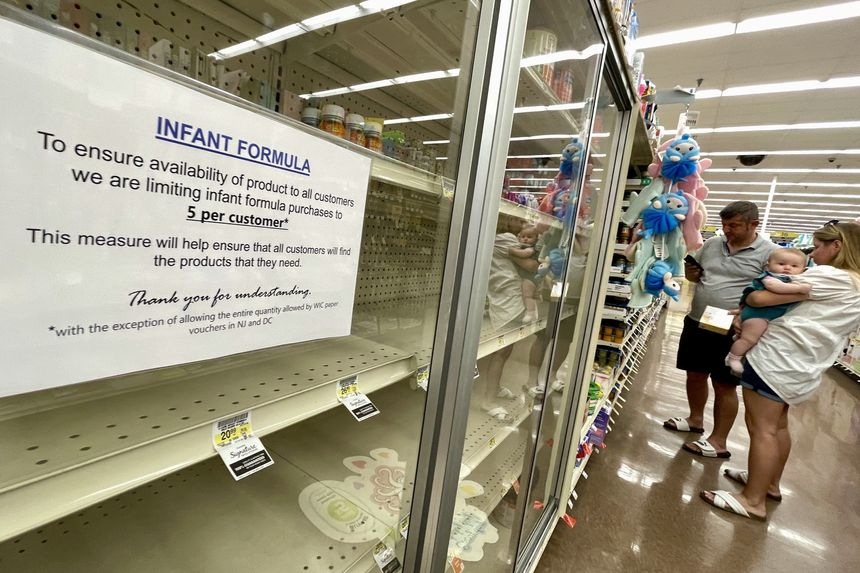
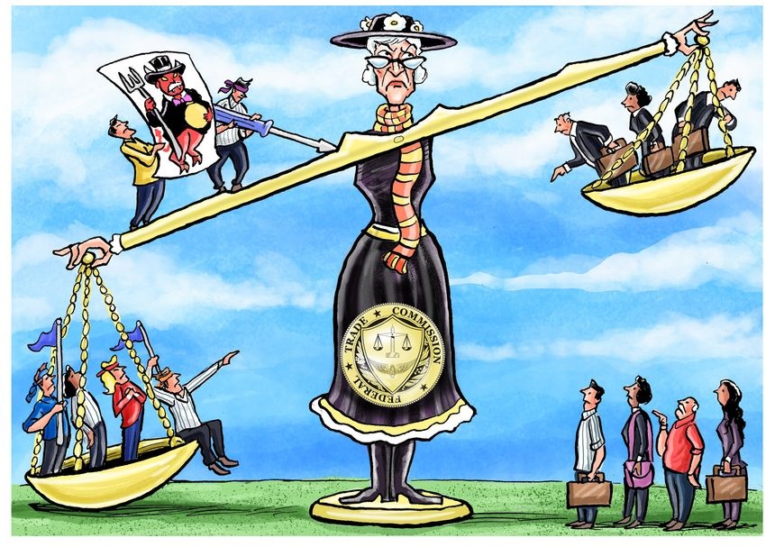
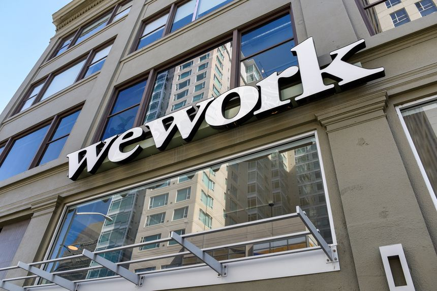
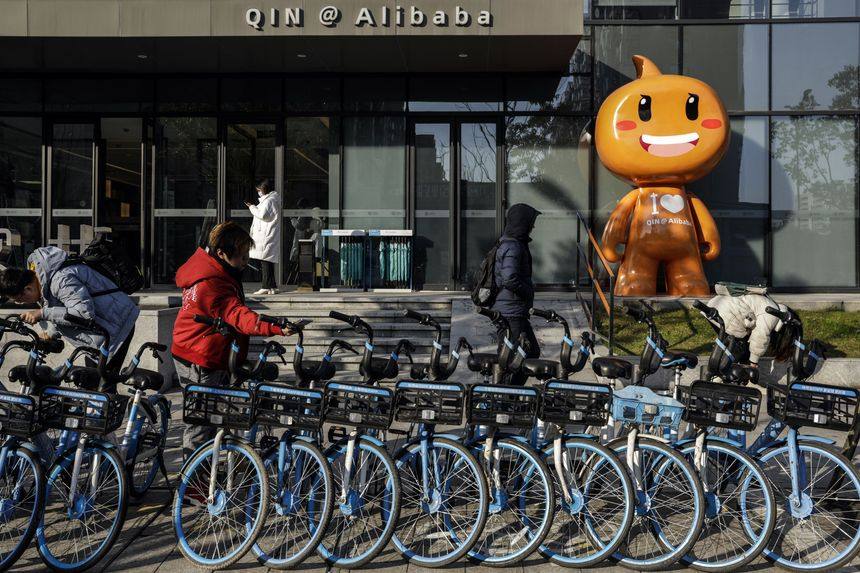

| 时间 | 分类 | 标题 | 副标题 | 正文 | 图片 |
|---|---|---|---|---|---|
| 2022-05-30 18:00:00 | Opinion | Biden’s Ukraine Ambivalence | The President is withholding rocket launchers and won’t help with food exports. | Sometimes it’s hard to tell if President Biden and his strategists want Ukraine to win its defensive war against Russia, or merely survive to sign a truce with more of its former territory under Russian control. That ambivalence is returning as an issue as Russian forces make new military gains in the Donbas region of eastern Ukraine. On Monday Russian troops moved into the center of Severodonetsk, one of the last major Ukrainian strongholds in the Donbas, which is the industrial heart of the country. The advances followed relentless artillery and rocket barrages on the city that resemble the destruction of Mariupol. |
|
| 2022-05-30 17:59:00 | Opinion | The Canary in the Pebble Mine | A textbook example of why the U.S is vulnerable foreign mineral and mining extortion. | Politicians are demanding that the U.S. become more self-sufficient in crucial metals and minerals, but then they block domestic mining at every opportunity. Alaska’s Pebble Mine project is the latest to join the casualty list. The Pebble site holds an estimated $300 billion to $500 billion in mineral resources and could be one of the world’s largest suppliers of copper and gold. Electric cars as well as wind and solar power require enormous amounts of copper. Investors have invested nearly $1 billion on exploration, engineering and studies to meet regulatory demands. |
|
| 2022-05-30 17:58:00 | Opinion | When ‘Temporary’ ObamaCare Subsidies Are Forever | Democrats want the pandemic emergency bonus payments to be permanent. | A time-honored political trick is to pass a “temporary” subsidy that people get used to and then cry hardship when the emergency program ends. The latest example is the Democratic scramble to make permanent a huge ObamaCare subsidy expansion passed during the pandemic. More than two dozen Democrats wrote their leaders this month asking to include provisions to “permanently lower the cost of health care” in any reconciliation bill, and the signers include some in tough re-election races such as Abigail Spanberger from Virginia. |
 |
| 2022-05-30 17:55:00 | Opinion | Colombia Tilts Toward Trouble | A leftist candidate with ties to Cuba will face an eccentric populist in the presidential runoff. | Not too many years ago Colombia had defeated narco-left guerrillas and seemed headed for stable prosperity. But after Sunday’s first round in the presidential election, the country of 51 million is tilting toward the left-wing populism that has harmed so many Latin nations. Former M-19 guerrilla Gustavo Petro finished first with 40% of the vote, short of the majority required to avoid a runoff on June 19. His opponent will be Rodolfo Hernández, a successful businessman and former mayor of Bucaramanga (2016-2019), who finished second with 28%. An eccentric 77-year-old with little fixed ideology, Mr. Hernández surged late in the race with the skillful use of TikTok while campaigning as an outsider against corrupt elites. |
 |
| 2022-05-30 17:54:00 | Opinion | Germany’s New Defense Deal | Berlin reaches consensus on more military spending—for now. | One big question facing the North Atlantic alliance after Russia’s invasion of Ukraine is whether Germany is serious about Chancellor Olaf Scholz’s pledge to rearm Europe’s largest country. An answer of sorts emerged Sunday evening, and allies will be somewhat reassured. Mr. Scholz in late February promised rearmament after 30 years of underinvestment in the German military. The centerpiece of his “turning point” in foreign policy was a twin commitment to create a €100 billion ($108 billion) special fund for defense procurement and to spend 2% of gross domestic product on defense in line with the North Atlantic Treaty Organization goal. |
 |
| 2022-05-30 17:29:00 | Markets | Oil Prices Top $120 as China Eases Lockdowns | Prospect of European Union ban on seaborne Russian oil imports adds to upward pressure on prices | Oil prices rose to their highest level in more than two months Monday, driven by China’s tentative emergence from Covid-19 shutdowns. A renewed push by European Union leaders to strike a deal that would ban most Russian oil imports added to the upward momentum on prices. Heading into the summit in Brussels, German Chancellor Olaf Scholz said he was confident the bloc would find a consensus over a ban—though other European leaders were more cautious about the chances of an imminent agreement. |
 |
| 2022-05-30 17:26:00 | Opinion | Poaching Putin’s Tech Workers as an Alternative to Sanctions | Simply by issuing hassle-free visas, Western countries can crimp the Russian economy and help themselves. | As the war in Ukraine rages on, Western leaders are struggling to find ways to weaken Russia without risking escalation or harming themselves economically. But a labor-market policy toward Belarus offers one solution: Issue hassle-free tech-worker visas. Poland’s tech sector has been thriving so much that it’s in dire need of workers. Many Poles with tech experience are being snapped up by companies in Europe and even in the U.S. The Polish government’s website offers an extraordinarily friendly welcome: “Are you an engineer or do you have experience in the IT sector? Are you considering relocating to Poland? We will help you fast-track the immigration procedure, allowing you to enter Poland together with your family.” The welcome is part of a Polish-government launch last year that saw the country inviting Belarusian tech experts to meet its demand for tech workers. When the visa was launched, Poland had a shortage of about 50,000 tech workers, with the number expected to double within the next 10 years if nothing is done. |
 |
| 2022-05-30 17:15:00 | Opinion | Joe Biden: My Plan for Fighting Inflation | I won’t meddle with the Fed, but I will tackle high prices while guiding the economy’s transition to stable and steady growth. | The global economy faces serious challenges. Inflation is elevated, exacerbated by Vladimir Putin’s war in Ukraine. Energy markets are in turmoil. Supply chains that haven’t fully healed are causing shortages and price hikes. Americans are anxious. I know that feeling. I grew up in a family where it mattered when the price of gas or groceries rose. We felt it around the kitchen table. But the American people should have confidence that our economy faces these challenges from a position of strength. |
 |
| 2022-05-30 17:13:00 | Opinion | Political Narratives Are the Media’s Default in Times of Tragedy | Every bad event can supposedly be fixed by a new government tax, program or regulation. | A crippling fallacy that characterizes our modern media is the idea that every event that rises to the level of news must connote some wider societal or political crisis that can only be remedied by government intervention. Tragedies, natural disasters, acts of unspeakable evil aren’t simply to be reported and explained for what they often are: the products of individual will or negligence, irremediable human malignity or some complex set of scientific interactions. Instead each event—from lethal accidents to vicious murders to Category 5 hurricanes—is immediately sorted into its prelabeled moral narrative file, each one full of similarly useful sententious parables. |
 |
| 2022-05-30 16:53:00 | Opinion | Send In the Marines for a Modernization | Force Design 2030 ensures they will still be first to the fight. | On paper the Russians have every advantage. A million more soldiers in uniform, more than 10 times the military budget, 10 times the aircraft, six times the tanks. But a much smaller Ukrainian force resolutely repelled Russia’s attack on and around Kyiv and it continues to stymie Russian forces with small infantry units equipped with modern weapons, the latest training, the best intelligence and the courage of troops fighting for freedom. Most commentators have been surprised, but Ukraine’s successful principles are the same as those in the U.S. Marine Corps’ plan to modernize. The Marines understand something the Kremlin did not: In the face of technological change, the future of warfare won’t be like its past. |
 |
| 2022-05-30 16:53:00 | Opinion | Blinken’s Indo-Pacific Blueprint | A clear statement of American national strategy that deserves bipartisan support. | Bangalore, India Secretary of State Antony Blinken gave his long-awaited speech laying out the Biden administration’s China policy last week at George Washington University. It was a clear statement of American national strategy that will be closely read by foreign ministries and leaders around the world. Since 1945, Mr. Blinken said, America and its allies have built a global order that has to a large degree kept the peace and promoted the well-being of people around the world. The system needs to be modernized and reformed, but the defense of that system remains the cornerstone of President Biden’s foreign policy. |
 |
| 2022-05-30 12:49:00 | Opinion | Have We Resigned Ourselves to Regular Mass Shootings? | It wasn’t always this way, even when guns were widely available. | Regarding your editorial “Young Men, Guns and Guardrails” (May 26): I am old enough to remember being able to buy guns by mail order. As Texas Gov. Greg Abbott pointed out, 18-year-olds have been able to buy long guns for over 60 years. Yet schools, churches, movie theaters and grocery stores were not getting shot up as they are today. I also remember saying the Pledge of Allegiance in school, going to church, obeying my teachers and respecting the police. There were no first-person-shooter videogames and there was a lot less violence in the media. My parents and grandparents expected respect, civility and courtesy. The erosion of cultural norms together with the deinstitutionalization of those with drug problems and mental illness lays bare what happens when a society takes down the guardrails of civil behavior. We end up with more people driving into the ditch and taking innocents with them. |
 |
| 2022-05-30 12:48:00 | Opinion | Fight China’s Predatory Solar Policy | This year’s price increase in solar panels is due to supply-chain snafus, not tariffs. | Regarding your editorial “Biden’s Solar Tariff Brawl” (May 23) and T.J. Rodgers’s op-ed “Tariffs Throw Shade on the Solar Industry” (May 25): Since antidumping and countervailing duties were instituted in 2012 and 2014, and “safeguard” tariffs in 2018, growth in the U.S. solar industry has outpaced all projections while prices fell. U.S.-based solar manufacturing grew strongly, accounting for nearly 20% of U.S. consumption. This year’s price increase in solar panels is due to supply-chain snafus, shipping-cost increases and excessive dependence on Asian supplies, not tariffs. Experience since 2018 shows that a simple, comprehensive tariff policy limiting the penetration of subsidized Chinese solar products can support the healthy growth of the U.S. industry. But Chinese solar manufacturers, led and orchestrated by the Communist Party, are resourceful. They now rely on facilities in Southeast Asia to evade U.S. tariffs. The U.S. solar installers who want to make the U.S. dependent on cheap Chinese solar equipment—manufactured with slave labor and produced with coal-fired electricity—are playing into the hands of the Chinese government. |
 |
| 2022-05-30 12:47:00 | Opinion | A Nobel Prize in Economics for Joe Manchin | Better him than the 17 academic superstars who endorsed Build Back Better as a salve for inflation. | In “Durham, Disinformation and 2024” (Business World, May 25), Holman Jenkins, Jr., warns us that the disinformation issued by 50 former intelligence officials should “horrify any American,” particularly since their coverup of the Hunter Biden laptop story may have influenced the 2020 election. It should be recognized, however, that such shameless use of one’s expert reputation is not limited to former government officials. Consider a recent example from academia: In September 2021, 17 winners of the Nobel Prize in economics issued an open letter in support of the massive, $4 trillion to $5 trillion Build Back Better bill, claiming that it would lower inflation in the long run. Just imagine what our current short-run inflation problems would be if this bill had been enacted. Fortunately, it did not get through the Senate because of the opposition of West Virginia’s Joe Manchin. |
 |
| 2022-05-30 12:29:00 | Opinion | Why Won’t the FDA Let Doctors Prescribe Fluvoxamine for Covid? | Trials show it keeps patients from getting sicker, but the agency won’t approve its emergency use. | The Food and Drug Administration is under attack for being too cozy with drugmakers, but there’s nothing wrong with regulators cooperating with private industry. That’s how we got Covid vaccines and therapies in record time. What’s rotten is that applications for new uses of generic drugs are reviewed under different standards than those for novel treatments. That’s what the FDA did this month when it rejected a Covid emergency-use authorization (EUA) application by doctors for the antidepressant fluvoxamine. The media has derided some doctors as quacks for advocating off-label drugs like hydroxychloroquine and ivermectin. Early in the pandemic studies suggested the two anti-parasite drugs could be beneficial. David Boulware, an infectious disease specialist at the University of Minnesota, helped lead four of those trials. Yet he now strangely finds himself clashing with the FDA over its rejection of fluvoxamine. |
|
| 2022-05-30 12:28:00 | Opinion | How to Make Up the Covid Learning Loss | Paying students for attendance, behavior and homework can boost achievement. | When Covid-19 struck, many schools canceled in-person classes to control the spread, with some remaining virtual for a year or more. Whatever the benefits, these decisions delayed student learning. To this day, kids are lagging behind previous norms for academic progress—the poor most of all. With kids having sacrificed so much in the fight against Covid, a disease that primarily harms those much older, it’s time for society to get students back on track. As it turns out, there’s a way to improve student learning that even sullen teenagers won’t complain about: Give them financial incentives to study hard. |
|
| 2022-05-30 08:50:00 | Markets | Green Capital Scores Against Coal in Australia | AGL Energy is forced by activist investors to abandon planned corporate split to protect its coal-power assets—such dramas will become more common | Environment-conscious investors have scored a victory against dirty power in Down Under, derailing a plan by Australia’s largest power company to spin off its coal power assets—which would have helped ringfence them from activist pressure to shut down early. That win shows that investors are buying into the idea that a green agenda can also be a good business strategy—even at companies still heavily reliant on dirty fuels. Whether they are really right will probably take years to prove. |
 |
| 2022-05-30 08:30:00 | My Monday Morning | Chef Thomas Keller on Finding Professional Success After 40 | The chef worked in kitchens for over 20 years before buying The French Laundry—and has a secret hack for ordering In-N-Out fries | In our series My Monday Morning, self-motivated people tell WSJ. how they start off the week. Chef Thomas Keller has an allergy, but it is not to food. It’s to brainstorming. |
 |
| 2022-05-30 08:00:00 | CFO Journal | Companies Start to Lean More on Cost Savings Amid Persistent Inflation | After relying primarily on price increases, executives are looking for other ways to maintain profit margins |  |
|
| 2022-05-30 07:00:00 | Markets | Lumber Prices Slump With Rising Interest Rates | Prices shed more than 50% since March, when the Fed began raising borrowing costs to slow inflation | Lumber prices have come crashing down in a new sign of how rising interest rates are deflating markets that boomed during the pandemic. Wood prices were a leading indicator of the supply-chain problems and inflation that followed pandemic lockdowns. Prices shot up in the summer of 2020 as cooped-up Americans remodeled en masse and demand for suburban houses soared. By last spring, lumber cost more than twice the prepandemic high. Now, two-by-four prices are flashing caution. |
|
| 2022-05-30 06:11:00 | Markets | Global Stocks Rise as China Signals Stimulus for Shanghai | U.S. stock and bond markets are closed Monday for the Memorial Day holiday | International stocks rose Monday, extending a rally that has pared some of this year’s losses, while U.S. markets were set to stay closed for the Memorial Day holiday. The Stoxx Europe 600 rose 0.8%, led by shares of technology and luxury-goods firms. London’s FTSE 100 edged up 0.2% and Germany’s DAX climbed 0.8%. |
 |
| 2022-05-30 05:30:00 | Markets | Market Slide Forces Rookie Traders to Grow Up Fast | All traders have to live through their first stock meltdown; the current one is a doozy | Lucas Daignault likes to glance at his E*Trade account before school or after his shifts at the supermarket. More days than not lately, it shows a sea of red. Mr. Daignault, who just turned 18 years old, is mostly invested in a fund that tracks the S&P 500. The index is off to its worst start to a year in more than five decades, but he tries not to dwell on it. His strategy is to put about $500 a month into his brokerage account, and he has no plans to stop. |
|
| 2022-05-29 10:00:00 | Markets | Where to Look for the Next Wall Street Blowup | The tide’s definitely gone out in markets this year, but finance has come through with few problems—so far | When the tide goes out you find out who was swimming naked, Warren Buffett memorably said. The tide’s definitely gone out in markets this year, but finance has come through with few problems. Is it possible that this time not many were skinny-dipping? The optimistic view is that the typical culprits—speculators using borrowed money—had been caught out already in the past two years and so weren’t up to their usual tricks. The pessimistic view is that the blowups are still to come. |
|
| 2022-05-29 09:00:00 | Markets | Summer Vacationers Want to Kick It Old School | Hotels and online travel agents that book them are making a comeback as the world gets closer to normal | The new and the high tech are suddenly out of fashion, with the Nasdaq down around 23% this year. That sentiment change seems to have bled into the online travel sector, where the uncool is making a comeback. There is no denying that longer-term trips in the most remote geographies are still seeing a lot of traction, but as even Airbnb pointed out in its first-quarter earnings report earlier this month, bookings to urban destinations are back to growth relative to prepandemic levels, and short-term stays are swiftly regaining favor. |
|
| 2022-05-29 05:30:00 | Markets | What Stock Investors Are Watching for: Signs of Stability | Wall Street’s ‘fear gauge,’ investors’ sentiment and bond spreads are tracked for clues on where the market might go next | The turmoil in U.S. stocks has nervous investors parsing the market’s internal gauges for signs of relief. War, inflation and concerns of an economic slowdown have dragged the S&P 500 to its worst first 100 trading days of a year since 1970. With markets recovering some this past week, investors are tracking everything from options bets to surveys of investor sentiment to assess when the volatility might end. |
|
| 2022-05-28 10:00:00 | Markets | Why Nordstrom Steamed Ahead as Old Navy Sank | Consumers are finally starting to swap sweatpants and tees for dresses and suits; tourism could be the next boost for some apparel brands | Goodbye, sweatpants; hello, dress pants. A clear signal from apparel retailers reporting results lately is that customers are finally starting to dress like adults again. But, just as with the customers they attract, there are haves and have-nots: Brands with higher price tags are feeling much less of a pinch from inflation than affordable ones. |
 |
| 2022-05-28 08:00:00 | Logistics Report | Baby-Formula Shipments Come With High Security to Deter Cargo Thieves | Logistics companies are using tracking technology and special locks to protect deliveries of infant formula from criminals | Efforts to rush baby formula to depleted U.S. stores are triggering a range of security steps aimed at protecting the shipments from potential theft, logistics security experts said, including measures normally taken when moving pharmaceuticals and electronics. The precautions range from paying special attention to who is handling and transporting the formula to adding tracking technology and special locks. Security experts said these procedures have been used for years in protecting goods from semiconductors to household staples that have been targeted by cargo thieves. |
 |
| 2022-05-28 08:00:00 | Risk & Compliance Journal | Law Firms Branch Out Beyond Lawyers in Bid to Beat Out Rival Advisers | Facing competitive pressure from consulting firms and others, old law firms try to pick up new tricks | ||
| 2022-05-28 05:30:00 | Markets | Adjustable-Rate Mortgages Are Back, But They’re Not Like You Remember | Gone are the ultralow teaser rates and lax lending requirements. Today’s ARMs are safer and so are borrowers. | A jump in interest rates has revived demand for adjustable-rate mortgages. But these loans bear little resemblance to the ones blamed for fueling the 2008-09 financial crisis. Applications for ARMs, a kind of mortgage that carries a lower rate in the loan’s early years, more than doubled in April from a year earlier, according to the Mortgage Bankers Association. More than 9% of mortgage applications submitted last week were for adjustable-rate mortgages, up from 4% a year ago. |
|
| 2022-05-27 19:00:00 | Opinion | America’s Summer of Rolling Blackouts | Green energy policies are making the nation’s electric-power grid increasingly unstable. | ||
| 2022-05-27 18:56:00 | Opinion | The Wisconsin GOP’s Latest Meltdown | Why do Republicans seem so determined to lose the November elections? | ||
| 2022-05-27 18:55:00 | Opinion | When Police Make a ‘Wrong Decision’ | Uvalde officers are under scrutiny for delay in stopping the school shooter. | ||
| 2022-05-27 18:53:00 | Opinion | Education Embarrassment in Virginia | A new report on academic results shows that Gov. Youngkin has a great opportunity. |  |
|
| 2022-05-27 18:41:00 | Markets | Snap, VMware, Macy’s: Stocks That Defined the Week | Here are seven major companies whose stocks moved on the week’s news | Snap Inc. Snap spooked tech investors with a warning Monday. The maker of Snapchatsaid its second-quarter revenue and adjusted pretax earnings would be lower than it expected, as the social-media company feels the sting of disruptions in the digital ad market. Worries of slowdowns in online advertising rippled to other tech stocks, weighing on shares of Meta Platforms Inc. and Alphabet Inc. Snap shares plunged 43% Tuesday. |
 |
| 2022-05-27 18:02:00 | Opinion | Red Flag Laws Are As Good as the Data | School shooters only hide their intentions from those who aren’t looking. | ||
| 2022-05-27 17:59:00 | Opinion | Harry Blackmun’s Other Wrong Supreme Court Decision | The Justice who wrote for the Roe v. Wade majority also validated the Major League Baseball cartel. | ||
| 2022-05-27 17:58:00 | Opinion | Notable & Quotable: Douglas MacArthur on Duty, Honor, Country | ‘When I think of his patience under adversity, of his courage under fire, and of his modesty in victory, I am filled with an emotion of admiration I cannot put into words.’ | From remarks by Gen. Douglas MacArthur to West Point cadets at the United States Military Academy on May 12, 1962: |
|
| 2022-05-27 17:57:00 | Opinion | Why Electricity Blackouts Are Coming to Michigan | The shutdown of a nuclear power plant makes the state vulnerable to cloudy, windless days. | Midland, Mich. Whatever hopes people might have had for saving Michigan’s Palisades Nuclear Generating Station, it’s too late. On May 20, the plant shut down, taking with it 6.5% of the state’s electricity and 15% of the state’s clean energy. This leaves Michiganders with less reliable electricity and higher prices. |
|
| 2022-05-27 17:54:00 | Markets | Ruble’s Rally Stumbles After Interest-Rate Cut | Russian currency ranked as best performing major currency this year, before the latest central-bank intervention | A rally in the Russian ruble that made it the world’s best performing major currency reversed itself for a second day Friday following an extraordinary rate cut by the country’s central bank. Russia’s currency fell 2.7% against the dollar in offshore trading Friday, building on Thursday’s 6.7% decline. That extends the ruble’s weekly loss to about 6.8%, according to data from Tullett Prebon, its biggest weekly decline since the second full week of the war. |
|
| 2022-05-27 17:25:00 | Economy | A Dallas Fed Indicator Shows Glints of Moderating Inflation in April | The regional bank’s Trimmed Mean PCE, aimed at teasing out underlying price trends by excluding volatile categories, showed faint signs of a deceleration in price rises | Central bank data released Friday showed underlying inflation pressures may have started to slow in April, as a more widely known measure from the government also booked a welcome moderation in what remain very strong gains. The Federal Reserve Bank of Dallas said that its April Trimmed Mean PCE reading rose to 3.8% from the same month a year ago, after marking a 3.7% year-over-year increase the prior month. |
|
| 2022-05-27 17:10:00 | Opinion | One Tough Dentist | A story of courage all Americans should know. | Twenty years ago this month President George W. Bush walked into the Rose Garden and honored one of America’s greatest military heroes, whose valor had been largely overlooked for nearly six decades. Even today, how many Americans know the story of U.S. Army Capt. Ben Salomon? Salomon’s exploits remained obscure for generations—even his own family didn’t know the extent of his actions—because of the unique set of circumstances surrounding his heroism. The story came to national attention essentially by accident. At that 2002 ceremony President Bush posthumously awarded Salomon the Medal of Honor and noted: |
|
| 2022-05-27 17:08:00 | Markets | EY Split-Up Plan Exposes Rift Among Accounting Firms | Rivals of Ernst & Young say they are not going along with its idea to divide auditing and consulting businesses | Ernst & Young’s plan for a possible world-wide split of its audit and consulting businesses, code-named Project Everest according to people familiar with the matter, was dismissed by major rivals Friday who said they would keep their firms in one piece. Fellow Big Four firms KPMG and PricewaterhouseCoopers issued statements defending their existing models of offering consulting and tax services alongside the bread-and-butter audit work. PwC said it has “no plans to change course,” whatever rival firms do. Deloitte said it remains committed to its current business model. |
|
| 2022-05-27 16:57:00 | Mallinckrodt Bondholders to Finance Bankruptcy Exit After Market Snub | The drugmaker has had to downsize and revise its financing deal because of its struggles in securing investor support | Drugmaker Mallinckrodt PLC has obtained support among unsecured bondholders to fund its exit from chapter 11 after a chilly reception from the leveraged credit market. The Ireland-based company had been struggling to complete a financing deal needed to emerge from bankruptcy and has been working with Morgan Stanley to find investors. A $900 million loan deal failed to gain traction with market participants, partly due to concerns about investing in a company linked to opioid production amid growing market sensitivity about... |
||
| 2022-05-27 16:23:00 | Opinion | Why Young Men Shoot and What We Can Do About It | New gun laws won’t stop every mass shooting, but could they save some lives? | Your editorial “Young Men, Guns and Guardrails” (May 26) is correct that stricter gun laws won’t end mass shootings and that the urge for “action, any kind of action,” as former President Barack Obama suggested, is no way to guide policy. But this doesn’t necessarily support a larger conclusion about gun regulations. Let us posit a rigorous and universal system of background checks for the purchase of assault rifles with high-capacity magazines. It would disqualify not only those with criminal records but also those with a history of specific mental illnesses as well as buyers under age 21. Such a system unquestionably would be underinclusive—some deranged people would still find a way to acquire the weapons. It would also be overinclusive—screening out many who pose no risk. |
|
| 2022-05-27 16:21:00 | Opinion | Will the Last Free Thinker at Princeton Turn Off the Lights? | The firing of tenured Prof. Joshua Katz is a bad sign for diversity of thought. | The firing of Prof. Joshua Katz (“Princeton Fed Me to the Cancel Culture Mob,” op-ed, May 25) comes at a moment of growing awareness that the old Princeton may be gone and that conservative opinions may no longer be welcome on campus. Sadly, there are many examples and one gets the feeling that the student body is fragile and protected from the rigor that comes from true debate or a genuine diversity of thought. The faculty and staff seem obsessively focused on woke issues like the renaming of buildings and current theories of equity rather than instilling grit and independent thought in the next generation. |
|
| 2022-05-27 16:19:00 | Opinion | Why Every Corporation Now Has a ‘Mission’ | Warm fuzzies are included in their product bundles. | In explaining to students why firms adopt environmental, social and corporate-governance (ESG) missions, I encourage them to think of firms as selling multiple bundled products (“Does Your Mayo Need a Mission?” Exchange, May 21). One of these is warm fuzzies—feel-good senses associated with a firm’s product. Customers like warm fuzzies and are willing to pay for them. If the cost of providing warm fuzzies in the product bundle is lower than the additional revenue they bring in, a profit-making firm provides them. Unless the firm can explain how the mission is reducing its profits, its ESG mission can be understood as business as usual. Missions that increase profits aren’t best seen as missions. David Colander |
|
| 2022-05-27 14:47:00 | Opinion | Can America’s Cities Make a Post-Pandemic Comeback? | America’s leading economist of urban life says a return to the workplace is crucial, especially for the young. | Before Covid came to America in January 2020, only 5% of the U.S. labor force worked remotely all the time. Within a few months of the pandemic setting in, however, nearly every American who could work from home was doing so. Today remote work is a white-collar norm. “If you take the U.S. as a whole,” says Edward Glaeser, chairman of Harvard’s economics department, office attendance is “down about 19%, relative to pre-pandemic levels.” That average masks some startling variations among major cities. While Houston sits squarely on the mean at 19% and Los Angeles is “looking pretty good” at 21%, New York and Boston are both down 32%. |
|
| 2022-05-27 14:45:00 | Opinion | In Joseph Conrad, a Lens on Russia’s Barbarism | Raised in Ukraine by Polish parents, the writer grew up under Russian rule—and chronicled the cruelty of a regime opposed to Western values. | Joseph Conrad never ceased to condemn the violence and brutality of Russia, whose forces are today destroying cities and raping and murdering civilians in the Ukraine war. Russian troops recently moved past Berdichev, 125 miles southwest of Kyiv, where Conrad was born in 1857, and nearby Zhitomir, where he lived as a young child. Raised in Ukraine by Polish parents, Conrad grew up under Russian rule. In his boyhood the local society was composed of Russian civil servants, Polish landowners, Jewish merchants and Ukrainian peasants. After Conrad’s father Apollo was implicated in the Polish revolution suppressed by Russia in 1863, he and his family were exiled to the harsh climate and brutal life of Vologda, a penal town 250 miles northeast of Moscow. Conrad had a harrowing relationship with his gloomy and guilt-ridden father who exercised a profound effect on his life. Apollo’s political essay “Poland and Muscovy” (1864) described Russia’s century-old oppression of Poland and condemned Russia as the “terrible, depraved, destructive embodiment of barbarism and chaos,” as “the plague of humanity” and as “the negation of human progress.” Apollo believed that Catholic, democratic Poland was historically destined to protect Western Europe from the pitiless hordes of Moscow. Conrad adored his patriotic father but disliked Apollo’s disastrous politics that had traumatized his childhood and believed the pursuit of revolution was futile and destructive. In his teens, Conrad fled from the morbid atmosphere of Polish martyrdom to the freedom of England and life at sea. |
|
| 2022-05-27 13:00:00 | Markets | As Long as Paychecks Keep Coming, Spending Can Hold up | Despite weak overall sentiment, consumers don’t appear worried about their job prospects | Americans might be in a funk, but unless they start getting concerned about the job market, don’t worry too much about them cutting back on their spending. The Commerce Department on Friday reported that consumer spending on goods and services rose 0.9% in April from March. That was a bit more than economists had estimated, and came on top of an upward revision to the March spending figures. Notably, spending continues to outpace inflation—the Commerce Department said that its measure of inflation (which is the Federal Reserve’s preferred gauge) rose 0.2% in April from a month earlier. |
|
| 2022-05-27 11:00:00 | Markets | How to Weather This Stock Market Storm | For some Main Street investors, this year’s decline doesn’t feel like a calamity. It feels like an opportunity. | Keep calm and carry on. For many individual investors, that’s more than a meme or a message on a T-shirt. It’s become a way of life. |
|
| 2022-05-27 09:49:00 | Markets | Big Oil Has a New Unknown: Taxes | New U.K. ‘energy profits levy’ shows how easily policy can be usurped by politics, bringing more unpredictability to the energy transition | Politicians want greater energy independence. They also want to cut carbon emissions. Most of all, though, they want votes. The conflicting priorities of policy makers shaped a tortuous path to a new tax on oil-and-gas profits in the U.K., finally announced Thursday after much wrangling and leaking. The “energy profits levy” adds an extra 25% to the existing 40% headline tax rate on the industry’s local earnings. Prime Minister Boris Johnson’s government expects it to raise about £5 billion, or $6.3 billion, in its first 12 months. |
|
| 2022-05-27 08:04:00 | Markets | Japan’s Stodgy Small Banks Might Finally Show Investors the Money | Midsize lenders are sitting on large holdings of other Japanese companies. That could start to change soon. | Investors have never been in much love with Japan’s small banks. The prospect of a gradual move to clean up their balance sheets may change that. Japanese regional banks don’t look like good investments: returns have been paltry and growth is nonexistent. Their small scale makes it hard to compete with the country’s megabanks, and Japan’s low interest rates and aging population just add to their problems. Shares of Japanese regional banks have nearly halved since 2015, according to FactSet. |
|
| 2022-05-27 08:00:00 | Markets | Coinbase Leaders Net $1.2 Billion in Share Sales | Haul taken by two co-founders and two executives contrasts with shares’ sharp decline since becoming publicly available last year | Four top Coinbase Global Inc. officials have collectively pocketed more than $1 billion by selling shares since the cryptocurrency exchange’s public listing last spring, a period in which the company’s shares have declined some 80%. Co-founders Brian Armstrong and Fred Ehrsam, as well as President and Chief Operating Officer Emilie Choi and Chief Product Officer Surojit Chatterjee, together netted about $1.2 billion in proceeds from stock sales starting the day the San Francisco-based company started trading through February of this year, according to a Wall Street Journal analysis of regulatory filings. |
|
| 2022-05-27 07:30:00 | THE EXPERTS | Wealth Management | Inflation and Stock-Market Volatility Prompts Most Retirees to Alter Finances, Study Finds | Higher prices are eating away at the purchasing power of retirement savings | Maddy Dychtwald is an author and co-founder of Age Wave, a think tank and consultancy Twenty-nine years. That’s the ideal length of retirement, according to retirees surveyed in a new study. But many of those retirees are now concerned that inflation and market volatility is impacting their ability to achieve that timeline. |
|
| 2022-05-27 07:00:00 | Markets | TerraUSD Crash Led to Vanished Savings, Shattered Dreams | Investors swept up in the mania for the high-yielding stablecoin thought it would be safe | TerraUSD was touted as a blue-chip cryptocurrency. Now its investors are reeling from painful losses and asking if it was all a get-rich-quick scheme. A surgeon in Massachusetts can’t stop thinking about how he lost his family’s nest egg. A young Ukrainian considered suicide after losing 90% of his savings. Other investors have given up dreams of starting new businesses or quitting their day jobs. |
|
| 2022-05-27 06:50:00 | Markets | Stock Futures Point to First Weekly Gains Since March | All three major U.S. indexes are up 3.4% or more for the week, based on Thursday’s close | U.S. stock futures rose, putting major indexes on track to extend a recent stretch of gains and snap a punishing losing streak. Futures for the S&P 500 added 0.3% Friday, while those for the Dow Jones Industrial Average ticked up 0.1%. Contracts for the technology-heavy Nasdaq-100 gained 0.5%. On Thursday, stocks climbed, pushing the Dow to its fifth consecutive daily gain. |
|
| 2022-05-27 06:00:00 | CIO Journal | Chattanooga Finds Fresh Identity as a Tech, VC Hub | The little city on the Tennessee River has had citywide superfast internet for over a decade, and a high quality of life. In the age of remote working, those are paying off big time, says Mayor Tim Kelly. | ||
| 2022-05-27 05:42:00 | Markets | China Tech Stocks Rally After Alibaba and Baidu Beat Forecasts | The surge came after the internet companies reported better-than-expected results | Chinese internet stocks jumped, after results from Alibaba Group Holding Ltd. and Baidu Inc. came in ahead of the market’s downbeat expectations. The rally, which extended a period of extraordinary volatility for the sector, began in the U.S., where American depositary receipts in both companies leapt by more than 10% Thursday. That helped fuel a 7.6% advance in the broader Nasdaq Golden Dragon China Index. |
 |
| 2022-05-27 05:30:00 | Markets | SPACs Are Warning They May Go Bust | More than two dozen companies say they may not survive much longer | The SPAC boom brought a wave of companies to the public markets promising years of rapid growth and profits to investors. Two years since the boom began, many of these companies are already warning they may go bust. At least 25 companies that merged with special-purpose acquisition companies between 2020 and 2021 have issued so-called going-concern warnings in recent months, according to research firm Audit Analytics. |
|
| 2022-05-27 05:30:00 | Markets | Investors Quit Tobacco. Why Not Alcohol? | The capital markets treat booze stocks as less harmful than tobacco, even though producers of alcohol and cigarettes have more in common than investors like to admit | Some sin stocks seem to be easier to forgive than others. Investors’ fondness for liquor over cigarettes is a puzzle, even if it shows little immediate sign of changing. The tobacco sector shows how quickly popular investments can sour if regulators decide to crack down on addictive consumer products. Five years ago, big cigarette stocks were trading at 19 times projected earnings on average, having generated total annual shareholder returns above 20% since 2000—more than four times the S&P 500 average. They have since plunged and now fetch just 11 times because of the threat of stricter tobacco laws, including recent proposals to ban menthol flavors in the U.S. |
|
| 2022-05-27 05:30:00 | Markets | Gas Prices Are Surging, Demand Is Slipping Ahead of Memorial Day Weekend | Record high prices are pinching Americans’ pockets ahead of what is usually peak summer driving season | Record high gas prices are starting to take a toll on the American consumer. Demand for gasoline in mid-May fell to one of its lowest levels for this time of year in nearly a decade, according to government data. The drop is an early indicator that rising gas prices are prompting some Americans to change their driving habits ahead of Memorial Day weekend and what is typically the peak summer driving season. |
|
| 2022-05-27 05:30:00 | Finance | Little-Known Commodity Traders Help Russia Sell Oil | Off-radar middlemen make big profits as giants Trafigura, Glencore retreat | A group of under-the-radar commodity traders are cashing in on Russian oil, stepping in to buy and transport crude to customers as their bigger rivals retreat from the market. Little-known merchants including Paramount Energy & Commodities SA and Coral Energy Pte. Ltd. are buying unwanted Russian oil at deep discounts. For taking on the risk, the companies can make $20 million or more on one cargo depending on the size of the tanker, according to traders. That is up from $600,000 before the war. |
|
| 2022-05-27 05:30:00 | Markets | Bets Against U.S. Treasurys Rake In Gains as Fed Raises Rates | Funds designed to soar when bonds crash have shined for investors who predicted tighter policy | Christopher Backes has embraced a gutsy trade: betting against U.S. government debt. With Treasury yields soaring this year, the price of government bonds has plunged. For traditional debt investors, that is a nightmare. For Mr. Backes, a 31-year-old recruiter from Maryland, it is a gold mine—for now, anyway. |
|
| 2022-05-26 20:30:00 | CIO Journal | Broadcom Deal for VMware Highlights the Rise of Virtualization | The $61 billion acquisition of VMware reflects growing demand for software applications that replace expensive computer hardware | ||
| 2022-05-26 19:20:00 | Opinion | Let Not Our Hearts Grow Numb | Democrats should stop their manipulations. Republicans should get serious on guns. | We’re out of words because we’re out of thoughts because we said them all and spent them all after Columbine and Sandy Hook and Parkland. The shock was the lack of shock you felt when you heard. You indicted yourself: My heart has gotten cold. No, it hasn’t, but the past quarter century it’s been numbing up. We underestimate how demoralizing these shootings are. They hurt our faith in America (why can’t we handle this?) and the future (what will it be like if this continues?). And there’s the new part of the story that is disturbing, this sense—we’ve had it before—that the police reliably come to the scene but they’ve got some kind of process or procedure that keeps them from fighting their way to the actual site of the shooting. Parents were massing at the school in Uvalde and screaming, “Go in, go in!” They themselves would have, and were possibly stopped. This aspect of the story is not yet clear but you can’t see the emerging videos and not think something went very wrong. |
|
| 2022-05-26 18:59:00 | Opinion | A Federal Budget Warning for Joe Manchin | CBO says revenues are booming, but government spending is rising faster. | With inflation running hot and the economy cooling, West Virginia Sen. Joe Manchin doesn’t need another reason to oppose a big tax hike-and-spending bill. But the Congressional Budget Office has given him one anyway, with its updated budget outlook that is even bleaker than its forecast last summer. The good news is that tax revenues are booming. CBO projects that revenue this year will rise to 19.6% of GDP, the highest since 2000, and average 18.1% of the economy over the next decade. Higher tax revenue projections will shave $2.1 trillion off the deficit over 10 years. We don’t need to raise taxes to reduce the deficit. |
|
| 2022-05-26 18:56:00 | Opinion | Chiefly Illiterate in San Francisco Schools | The district pulls ‘chief’ from its CFO’s title as a progressive gesture to Native Americans | The San Francisco school district is a slow learner, apparently. In February voters ousted three school-board members in landslide elections. One complaint was that the board was more interested in progressive gestures, such as scrubbing Abraham Lincoln’s name off school buildings, than in reopening classrooms amid the pandemic. Now the San Francisco Chronicle reports that the school district is planning to phase out the word “chief” in its job titles, “given that Native American members of our community have expressed concerns.” Currently the district has executives with the customary roles of chief financial officer, chief of staff, and so on. |
|
| 2022-05-26 18:55:00 | Opinion | Boris Johnson Goes Bernie Sanders | After this week he’ll struggle to explain why anyone should vote Tory. | British Prime Minister Boris Johnson was embarrassed by this week’s report on his pandemic lockdown-busting parties, but the greatest political danger to his tenure is his mismanagement of inflation. His Tory government is handling it even worse than the Biden Administration is. This week Rishi Sunak, Mr. Johnson’s Chancellor of the Exchequer, rolled out another package of subsidies for households walloped by rising energy prices. This will include £650 each to about eight million people who receive means-tested social benefits. He’s doubling, to £400, an energy-bill discount for all households and converting it from an automatic loan into a subsidy. |
|
| 2022-05-26 18:55:00 | Opinion | Incentives and the Migrant Border Surge | Internal documents note how asylum-seekers track White House signals. | Migrants keep coming over the U.S.-Mexico border in record numbers, and it turns out the Biden Administration is well aware that the incentive provided by its immigration policies is one of the reasons. That’s the news in a report by the Axios website Wednesday that the planned repeal of a border-enforcement policy spurred as many as 50,000 migrants to prepare to cross into the U.S. from Mexico this week. The migrants know that the Biden Administration plans to repeal Title 42, which has been the government’s main tool for turning away asylum claimants for the past two years. A federal judge last week halted the repeal, but the Justice Department plans to appeal. |
|
| 2022-05-26 18:49:00 | Opinion | Indian Democracy Suffers for a Lack of a Competent Opposition | The Congress Party has foundered under the leadership of Rahul Gandhi but seems incapable of letting him go. | After a string of electoral losses, the Congress Party, India’s largest opposition party, concluded a three-day brainstorming conclave this month with a flurry of announcements about newly formed councils, task forces and mass contact programs to spread the party’s message across the country. The goal is to reinvigorate the party’s appeal ahead of national elections scheduled for 2024. But none of these plans dealt with the main problem facing the party: its leader, Rahul Gandhi. On paper, Mr. Gandhi resigned as party president in 2019 after leading Congress to its second straight national electoral drubbing at the hands of Narendra Modi’s Bharatiya Janata Party, but in practice he remains the party’s most visible face and star campaigner. The party appears to be in no hurry to choose a new president. Mr. Gandhi’s mother, Sonia Gandhi, has served as interim president for the past three years. |
|
| 2022-05-26 18:25:00 | Opinion | Why We Won’t Talk to the Jan. 6 Committee | If Republican leaders were to participate in this political stunt, it would change the House forever. | While Americans are struggling to put gas in the tank and food on the table, Democrats are busy weaponizing government to attack Republicans. Look no further than the Jan. 6 Select Committee investigation. Democrats created the Select Committee last year and packed it with partisans. Speaker Nancy Pelosi rejected Republicans’ chosen members, violating more than 232 years of House precedent, and also declined to appoint the required 13 members. These actions deprive the committee of balance and objectivity and raise questions about its legitimacy. |
|
| 2022-05-26 18:25:00 | Opinion | Return of the National Nanny | When activists took charge of FTC rulemaking in the 1970s, the agency barely survived the debacle. | Consider this scenario: With the political wind at their backs, activists, concerned over the putative power of business and the harm they are sure it causes, take control of the Federal Trade Commission. They propose to transform the economy by wielding the Commission’s most powerful weapon: industry-wide rulemaking. That happened, with disastrous results, in the 1970s and seems likely to happen again. Although the FTC barely survived its ’70s debacle, Commission leaders today appear bent on reshaping the American economy to fit their own vision. In a new report for the American Enterprise Institute, we analyze rulemaking changes the FTC approved last year that appear to have been made solely to expedite these radical goals. |
 |
| 2022-05-26 18:24:00 | Opinion | Mental-Health Reform Is a Bipartisan Issue | Policy can reduce the risk of another mass shooting like Uvalde. Nothing can eliminate it entirely. | Recent mass shootings in Uvalde, Texas, and Buffalo, N.Y., have prompted urgent calls to change the culture. That’s harder to do than changing policy, which is hard enough. Changing policy requires dealing in specifics, and also probabilities. Policy works within constitutional parameters to reduce the risk of harm, not to eliminate harm entirely. Debates over mass shootings have a reputation for devolving into partisanship. Democrats, favoring gun control, accuse Republicans of opportunistically raising mental-health questions as a diversion tactic. It’s partly true: Republicans do neglect mental-health reform in ordinary times. But there are achievable policy measures that could be pursued to reduce the risk of mental illness-related violence. |
|
| 2022-05-26 18:23:00 | Opinion | My Mother-in-Law Believes Putin on the War in Ukraine | She thinks the invasion is justified. They said so on Russian state TV. | “America is out to destroy us,” said Maria, my 92-year-old mother-in-law. She was in her Moscow kitchen. I was in Connecticut. Maria survived Stalin, the collapse of the Soviet Union, the loss of two children and an alcoholic, abusive husband. I love her, but she is a tragic example of how vulnerable human beings can be to propaganda. |
|
| 2022-05-26 18:13:00 | Opinion | Venezuela Sanctions Relief Is a Trap for Biden | Maduro wants concessions but has zero interest in free and fair elections. | Two unnamed senior Biden administration officials told reporters this month that the U.S. intends to ease sanctions that prohibit American companies from engaging with the Venezuelan oil industry. The Trump administration established those sanctions in 2019 and tightened them in 2020 as part of an effort to pressure the military dictatorship in Caracas to release political prisoners and hold free and fair elections. Yet the regime hasn’t even agreed to sit down at the proposed negotiating table in Mexico. What looks like a Biden concession with no quid-pro-quo has alarmed democracy advocates all over the Western Hemisphere—and especially in South Florida. They’re worried that the U.S. is tiptoeing toward a rapprochement with dictator Nicolás Maduro that will abandon the cause of Venezuelan freedom. (For the record, independent oil analysts say that Venezuela, with or without Chevron , isn’t capable of making a dent in lost Russian oil production any time soon.) |
|
| 2022-05-26 17:53:00 | Risk & Compliance Journal | Glencore Said It Revamped Its Compliance Program Following Guilty Pleas | The Anglo-Swiss commodities company published a 13-page investor update about its ethics and compliance program, which coincided with settlements it reached with various regulators | ||
| 2022-05-26 17:32:00 | CFO Journal | Accounting Firm EY Considers Split of Audit, Advisory Businesses | The move would create two large global professional firms | ||
| 2022-05-26 17:13:00 | Opinion | ‘Fat Ham’ Review: To BBQ or Not to BBQ | James Ijames’s riff on ‘Hamlet,’ fresh off winning a Pulitzer Prize, is an unalloyed comedy pleasure. | New York ‘Fat Ham,” James Ijames’s uproarious comic riff on “Hamlet,” arrives in New York trailing baggage. Not such bad baggage: The play was just awarded the Pulitzer Prize for drama. This is the theatrical equivalent of a full set of Louis Vuitton luggage stuffed with freshly bought couture. |
|
| 2022-05-26 17:11:00 | CFO Journal | WeWork Names Third CFO in Less Than Three Years | The co-working space operator is still recovering from the pandemic |  | |
| 2022-05-26 16:34:00 | Logistics Report | Dollar Tree Targets Speed, Productivity in Supply Chain Upgrades | The discount retailer is bulking up capital spending and bringing more technology to distribution as it increases its store count | Discount retailer Dollar Tree Inc. is trying to ramp up its supply chain to match its ambitious expansion plans. The company plans to spend more to improve its supply chain as it increases the use of data analytics and automation to get more goods more efficiently and quickly to its more than 16,000 Dollar Tree and Family Dollar stores, as well as to about 590 more outlets it plans to open this year. |
|
| 2022-05-26 16:19:00 | Opinion | Affordable Breakfast Wins in a Landslide | McDonald’s shareholders overwhelmingly reject billionaire’s animal agenda. | One finds no shortage of depressing and even heartbreaking news these days. But today there’s also reason to hope that finally, the era of hyper-politicized corporate and investment management just might be drawing to a close. The great news for U.S. consumers is that the shareholders of the McDonald ’s Corporation have resoundingly rejected financier Carl Icahn ’s effort to make restaurant customers pay to soothe his feelings about animals. Specifically, Mr. Icahn feels that some of the pregnant pigs at McDonald’s suppliers deserve more space and he mounted a campaign to replace two company directors with allies who appear to share his feelings. |
|
| 2022-05-26 13:50:00 | Opinion | Republicans Can Stop ESG Political Bias | The progressive left is using it to advance goals it could never hope to achieve at the ballot box. | I’m old enough to remember when liberals accused big business of consistently being on the side of Republicans. But in 2022 the woke left is poised to conquer corporate America and has set in motion a strategy to enforce their radical environmental and social agenda on publicly traded corporations. A sudden abundance of liberal shareholders isn’t what’s driving this new trend of woke capitalism, and it certainly isn’t a reflection of consumer demand. Rather, the shift is entirely manufactured by a handful of very large and powerful Wall Street financiers promoting left-wing environmental, social and governance goals (ESG), and ignoring the interests of businesses and their employees. |
|
| 2022-05-26 13:46:00 | Opinion | Southern Baptists’ Moment of Reckoning | A report on sex abuse in the church presents an ugly picture across 300 pages of evidence. | “Woe is me, for I am undone,” cried Isaiah. The courtly prophet had gone into the Temple in Jerusalem in a time of national grief, and there he had experienced a vision of the Lord God in his holiness. What Isaiah saw next was his own sin. In a similar moment, the Southern Baptist Convention has received the report from an independent investigation into sexual abuse and the handling of abuse claims by the SBC’s executive committee. Like Isaiah seeing his own sin, Southern Baptists have been presented a report that reveals a decadeslong effort on the part of some denominational leaders to deny or even conceal credible charges of sexual abuse. |
|
| 2022-05-26 12:49:00 | Pro Cyber News | Twitter to Pay $150 Million Privacy Fine as Elon Musk Deal Looms | Federal officials allege company deceptively used phone numbers and emails, collected for security purposes, for targeted advertising | ||
| 2022-05-26 12:19:00 | Markets | Dollar Stores Keep Passing the Buck | Budget chains are managing inflation a lot better than larger retail peers | Dollar stores are riding inflation like pros. Both Dollar General and Dollar Tree reported better sales and profits on Thursday than Wall Street expected. Dollar General’s comparable-store sales remained more or less flat in its quarter ended April 29 compared with a year earlier, better than the 1.2% decline that analysts polled by Visible Alpha expected. Dollar Tree’s same-store sales growth of 4.4% blew past expectations, mostly thanks to its namesake chain, where consumers are responding well to its introduction of price points above $1. |
|
| 2022-05-26 12:05:00 | Opinion | Biden’s Missed Opportunity and Strategic Ambiguity on Taiwan | The island nation is crucial to U.S. supply-chain resilience. | I couldn’t agree more that “Biden’s Real Taiwan Mistake” (Review & Outlook, May 24) was not to invite Taiwan to launch the Indo-Pacific Economic Framework (IPEF). Situated in the middle of the first-island chain in the West Pacific, where the U.S. has strong strategic and security interests, Taiwan is an indispensable partner. Economically, it is a high-tech hub; Taiwan manufactures 92% of global supply of the advanced logic chips essential for end users in AI and 5G, and many of them have military applications. The disruption of supply chains caused by the shortage of chips for the auto industry, which affected the jobs of millions of U.S. workers, crystallizes the importance of Taiwan’s role. Bringing Taiwan to the IPEF will enhance the resilience of the global supply chain, secure America’s supply of strategic components and create jobs for U.S. workers. |
|
| 2022-05-26 12:04:00 | Markets | Nvidia Only a Bit Off Its Game | Disappointing forecast breaks a streak, but stock is much cheaper now | Nvidia may be the chip company for the metaverse, but even they can’t escape the real world sometimes. Financial results for Nvidia’s fiscal first quarter ended May 1 came in ahead of expectations, at least in the key business segments of videogames and data centers. Revenue surged 46% year over year to about $8.3 billion and adjusted operating earnings jumped even more, by 55% to a record high of nearly $4 billion. |
|
| 2022-05-26 12:02:00 | Opinion | BlackRock Replies: Proxy Voting Is Changing | The investor should have freedom of choice. | In “The Welcome Pushback Against Politicized Investment Managers” (op-ed, May 20), C. Boyden Gray and Jonathan Berry suggest asset managers like BlackRock and our competitors “push political agendas.” That’s not true. Special interests may apply a political lens to our thousands of annual proxy votes. But we cast votes based only on the long-term economic interests of the millions of people whose money we manage. If our proxy-voting record exhibits a bias, it is toward greater disclosure, which we believe makes markets more efficient, which in turn benefits our clients. |
|
| 2022-05-26 12:00:00 | Opinion | E15 Gasoline Can Save You Money at the Pump | The cost reduction overcomes the energy loss. | A letter (May 10) questions the savings from E15 gasoline (gasoline blended with 15% ethanol) versus mainstream E10 gasoline, claiming that reductions in miles per gallon with E15 will exceed cost savings. I have studied the impact of fuel composition on engine operation for decades. It’s correct that E15 contains less energy than E10, around 1.5% less. But assuming gasoline at $4 a gallon, this reduction in energy would be overcome by cost reduction when E15 gasoline costs 6 cents or more per gallon less than E10. Savings with E15 generally far exceed 6 cents a gallon compared with E10, producing a welcome reduction in operating cost per mile for consumers. Moreover, the 1.5% penalty with E15 is a worst-case scenario. Octane enhancement with E15 coupled with reduced intake temperature (heat of vaporization) typically offsets some of the 1.5% reduction in fuel economy. Finally, energy security from an American homegrown fuel, coupled with greenhouse-gas-emissions reductions, further support E15 as the preferred choice. |
|
| 2022-05-26 11:11:00 | Markets | What is a Central Bank Digital Currency and Should the U.S. Issue it? | White House, Fed studying implications of a government-backed digital currency that could compete with crypto assets | The Biden administration and the Federal Reserve are evaluating the potential creation of a U.S. digital dollar, backed by the central bank. Here’s what you need to know about the potential issuance of a U.S. central bank digital currency. |
|
| 2022-05-26 09:27:00 | Markets | Alibaba’s Next Challenge: a Sputtering Chinese Economy | China’s iconic tech firm barely weathered the tech crackdown in 2021, and 2022 could be just as bad | Alibaba had a horrendous 2021. Unfortunately, this year probably won’t be any better. Worried policy makers in Beijing have begun signaling they want to give Chinese Big Tech a break—but that is only because the overall picture for China’s economy, and consumers in particular, has darkened so much. |
 |
| 2022-05-26 09:00:00 | Markets | Fed’s Brainard to Tell Panel Digital Dollar Could Coexist With Stablecoins | Vice chairwoman will testify on benefits, risks to a U.S. central bank digital currency | WASHINGTON—A U.S. central bank digital currency could one day coexist with and even complement so-called stablecoins, Federal Reserve Vice Chairwoman Lael Brainard plans to tell House lawmakers Thursday. “In some future circumstances, CBDC [central bank digital currency] could coexist with and be complementary to stablecoins and commercial bank money by providing a safe central bank liability in the digital financial ecosystem, much like cash currently coexists with commercial bank money,” Ms. Brainard is expected to tell lawmakers, according to prepared testimony released by the Fed. |
|
| 2022-05-26 08:44:00 | Markets | Davos Elite Can’t Agree About the Economy and Neither Can Markets | The problem as many executives describe it: Current business is great, but the difficulties ahead are obvious | Usually the Davos crowd herds together on markets and the economy at the World Economic Forum in Switzerland. The “Davos consensus” can be a useful contrarian indicator since it is often entirely wrong. But there isn’t a consensus this year, which helps explain the jumbled state of markets. The S&P 500 is almost in a bear market. Yet there’s no agreement on whether recession is on the way. The problem as many executives describe it: Current business is great, but the difficulties ahead are obvious. |
|
| 2022-05-26 07:00:00 | Markets | Amazon Can’t Get Out of Big Tech’s Meeting Hell | Shareholder proposals surge at tech giants, but Amazon makes a particularly tempting target | Andy Jassy probably shouldn’t take it personally. Amazon . com’s new-ish chief executive led his first annual meeting for the company on Wednesday. He was greeted with 15 shareholder-sponsored proposals—the most Amazon has ever faced. The company unsurprisingly recommended “no” votes on all the measures, and almost as unsurprisingly, none actually passed. |
|
| 2022-05-26 06:30:00 | Pro PE Commentary Analysis | Wealthy Investors Pile Into Private Equity to Escape Stock Volatility | Individual investors are pushing cash into private markets as public markets tumble, fund managers say | Individual investors are increasing their bets on private-equity vehicles, hoping that these funds’ long-term horizon will offer a refuge from volatile public stock and fixed-income markets. Private-fund managers say inflows of money from wealthy individual investors have increased this year, and asset managers expect the trend to continue as higher interest rates and inflation weigh on publicly traded assets. |
|
| 2022-05-26 06:28:00 | Markets | Russia’s Economy Is Tanking—but the Ruble Is Soaring | Russia’s central bank lowers interest rates, making holding rubles less attractive | Sanctions against Russia have pushed its economy into what could be the biggest decline in decades—but the country’s currency has gone the other way. The ruble strengthened this week to levels not seen since 2018, making the currency the best performer against the dollar this year, based on a Dow Jones Market Data analysis of 56 currencies. The ruble has risen 22% against the greenback in 2022 and is up roughly 160% since it bottomed out days after Russia’s invasion of Ukraine three months ago. |
|
| 2022-05-26 06:06:00 | Markets | Stock Futures Edge Up Ahead of Tech Earnings | VMware, Dell Technologies and Alibaba are scheduled to post results Thursday | U.S. stock futures ticked higher ahead of earnings from large technology companies and economic data including jobless claims and an updated reading of first-quarter gross domestic product. Futures tied to the S&P 500 climbed 0.2%, signaling that the broad-market index may hold onto gains after it closed up 1% on Wednesday. Nasdaq-100 futures were flat, pointing to similar moves for tech stocks after the previous day’s rally. Dow Jones Industrial Average futures rose 0.3%. |
|
| 2022-05-26 06:00:00 | Biotech Startups Seeking to Boost New Drug Targets Win Venture Funding | Venture-capital firms are backing companies working to tackle the problem of ‘undruggable’ proteins | Venture capitalists are financing startups seeking to increase the number of molecular targets for drugmakers to pursue, potentially enabling new treatments for cancer and other diseases. Many drugs work by inhibiting proteins involved in a disease. But the number of proteins accessible to drugmakers is limited because most disease-associated proteins are considered “undruggable,” meaning scientists have been unable to develop compounds against them, investors and entrepreneurs said. Startups... |
||
| 2022-05-26 05:33:00 | Markets | The Crypto Security Debate Goes to Court | Private lawsuits could help determine whether digital tokens should be treated as securities like stocks and bonds | WASHINGTON—Investors are asking the courts to decide an existential question for the cryptocurrency industry: whether digital tokens are, for legal purposes, more similar to stocks or to gold. Attorneys for cryptocurrency-trading platform Coinbase Global Inc. filed a motion this month to dismiss a class-action lawsuit arguing that 79 of the tokens listed on the firm’s platform are unregistered securities. |
|
| 2022-05-26 05:30:00 | Markets | Natural-Gas Prices Surge as Summer Cooling Season Switches On | Used in power generation, the fuel has tripled over the past year to the highest level since 2008 | Natural-gas prices are heating up ahead of air-conditioning season, adding pressure to household budgets and manufacturing costs. Futures for June delivery reached $9.399 per million British thermal units on Wednesday before ending at $8.971, up roughly 2% on the day and more than 20% this month. Prices have tripled over the past year and haven’t been so high since 2008, which was before frackers flooded the market with cheap shale gas. |